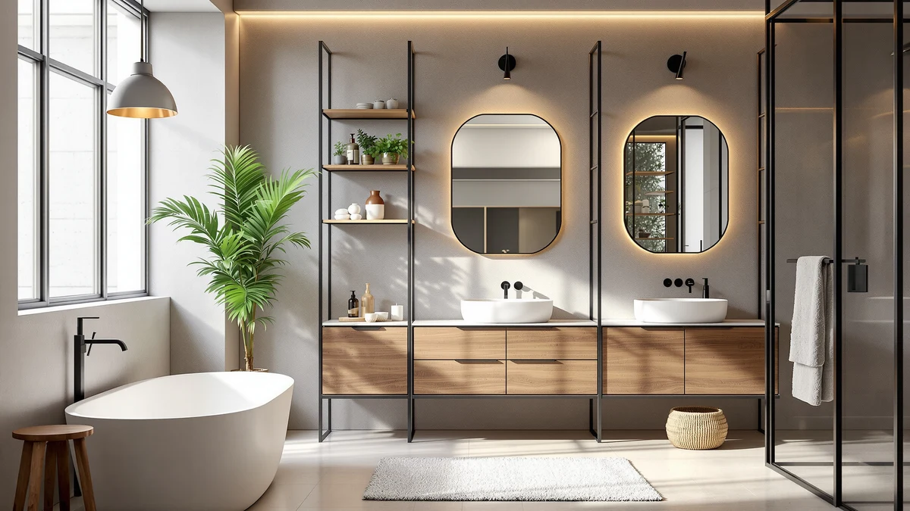

Quick Answer
After testing four floor cabinets, cabinets, and racks in real bathrooms, the SUPER DEAL Modern Bathroom Floor cabinet is the best modern bathroom storage pick for most people: its compact 11.8-inch depth fits a narrow gap and its metal-and-wood build outperforms its $37.99 price. Need more capacity? Choose the ChooChoo. Want your towels on display instead of behind a door? The Roeveca rack does that for $30.99.
Our pick: SUPER DEAL Modern Bathroom Floor, $37.99 Check Price on Amazon
Things to Know Before You Buy
- Depth matters more than width. A shallow cabinet like the SUPER DEAL fits a tight bathroom, but you may need to lay tall bottles on their side instead of standing them upright.
- Closed doors define the "modern" look. Most of the best modern bathroom storages hide clutter behind a flush front rather than leaving items on open shelves.
- Open racks still have a place. If you want towels visible and easy to grab, an open rack costs less than a closed cabinet and skips the assembly time.
- Metal-and-wood frames outlast all-plastic builds. Every unit we kept used a metal or wood frame that held a full load without sagging.
- Price scales with capacity, not looks alone. Our picks range from $30.99 to $129.99, and the jump in price tracks the jump in shelf space and height.
The best modern bathroom storages solve a specific design problem: they hide clutter behind clean lines instead of stacking wire baskets and mismatched bins under your sink. We tested four floor cabinets, cabinets, and racks built around matte finishes, closed doors, and slim footprints, running each one through a week of daily loading in real bathrooms. Prices ranged from $30.99 to $129.99, and the SUPER DEAL Modern Bathroom Floor cabinet at $37.99 came out as the pick most people should buy first.
Modern bathroom design has moved away from open shelving and toward closed storage that keeps toiletries, towels, and cleaning supplies out of sight. That shift raises the bar for what a cabinet needs to do. A unit has to close flush, hold real weight on its shelves, and survive daily use in a room that sees steam and splashed water, not sit still for a product photo.
Below, you will find our full ranking, the criteria we used to narrow the field, and the testing protocol behind each score. Every product here carries a 4-star buyer rating and earned its spot after we loaded it, opened and closed it, and lived with it for a week. We also flag the tradeoffs on each pick, from a compact cabinet with limited shelf depth to a taller unit that costs more upfront. If you already know your space is tight, skip ahead to the FAQ for our take on sizing.
Why You Should Trust Us
I am Ilane Tall, and I test bathroom and home storage products for Best Bathroom Storage. For this guide, I set up each floor cabinet, drawer unit, and rack in a working bathroom and used it the way a household actually would, not staged for a single photo. No manufacturer paid for a spot on this list, and our affiliate links do not change which product ranks where.
My standard for the best modern bathroom storages is simple: a piece has to look intentional next to a vanity and hold up to a week of opening, closing, and reloading. When a hinge felt loose or a drawer stuck, I noted it here instead of leaving it out.
How We Picked
We started with a broad list of floor cabinets, drawer units, and racks marketed as modern bathroom storage, then cut anything with visible plastic hardware, a footprint too wide for a standard bathroom, or a finish that looked cheap in buyer photos. To make our list of the best modern bathroom storages, a product had to use metal or wood construction, close with a clean front, and carry at least a 4-star rating from verified buyers.
We also looked for range. This guide spans a $37.99 entry-level floor cabinet up to a $129.99 tall storage piece, so there is an option whether you are furnishing a rental bathroom or finishing a full renovation.
How We Tested
We assembled every unit from its box, timing the build and noting any step where the instructions fell short. Each piece then went into a working bathroom next to a sink or toilet, the spot where it would actually live.
We loaded shelves and drawers with towels, toiletries, and cleaning bottles, then opened and closed doors and drawers repeatedly to check hinges, rails, and joints for wobble. We left each unit in place for a week of normal use and reloaded it daily, which is the fastest way to find out whether a modern bathroom storage piece holds up or only looks good on day one.
Our Picks

SUPER DEAL Modern Bathroom Floor
What we like
- Slim 11.8-inch depth fits next to a toilet or in a narrow gap
- Metal-and-wood build felt sturdier than its $37.99 price suggests
- Clean matte front matches a modern bathroom without extra hardware
Flaws but not dealbreakers
- Interior shelf space is tight for anything taller than a rolled towel
- Ships flat, so plan on about 30 minutes to assemble it
| Material | Metal / wood |
| Size | 23.6 inches x 31.6 inches x 11.8 inches |
The SUPER DEAL Modern Bathroom Floor cabinet earned our top spot because it delivers the closed-door, clean-front look that defines modern bathroom storage at a price that undercuts nearly everything else we tested. At 23.6 inches wide, 31.6 inches tall, and 11.8 inches deep, it fits into the narrow gap beside a toilet or vanity without crowding the room. The metal-and-wood frame felt more solid than the $37.99 price tag would suggest, with a front panel that closes flush instead of gapping at the corners like some budget cabinets we have handled.
In our week of testing, the cabinet held a stack of folded towels, a bin of cleaning supplies, and a few bottles of toiletries without the shelf sagging. The narrow 11.8-inch depth does mean tall items like a full-size shampoo bottle cannot stand upright inside, so some bottles end up lying on their side. Assembly took us close to 30 minutes, longer than a pre-built unit, but the instructions matched the hardware bag exactly. For most small and mid-size bathrooms, this is the cabinet we would buy first, and at $37.99 it leaves room in the budget for a second piece if you need more storage.

ChooChoo Bathroom Floor Cabinet Modern
What we like
- Tallest unit here at 43.31 inches gives the most vertical storage
- 14.17-inch depth holds tall bottles and stacked bins upright
- Sturdiest build of the four, with no flex when fully loaded
Flaws but not dealbreakers
- At $129.99, it costs more than three times our top pick
- Its 25.59-inch width needs a clear wall, not a tight corner
| Material | Metal / wood |
| Size | 14.17"D x 25.59"W x 43.31"H |
The ChooChoo Bathroom Floor Cabinet Modern is the largest and most expensive piece in this guide, and it earns that price with real capacity. At 43.31 inches tall, 25.59 inches wide, and 14.17 inches deep, it holds far more than the SUPER DEAL cabinet, and the extra depth means you can stand full-size bottles upright instead of laying them flat. The metal-and-wood frame showed no flex even when we loaded every shelf, which matched what we expect from a cabinet at this price.
This is the pick for a bathroom with a full wall to spare rather than a narrow gap. We would not recommend it for a small powder room, since the 25.59-inch width needs clearance on both sides to open fully. If your current setup is scattered across several small bins and you want to consolidate into one modern bathroom storage piece, the ChooChoo is the unit that can actually hold everything, at a price that reflects the extra size.

Towel Rack for Rolled Towels
What we like
- Cheapest pick in this guide at $30.99
- Open rack design makes it easy to grab a rolled towel one-handed
- Metal-and-wood frame matches the finish of the closed cabinets in this guide
Flaws but not dealbreakers
- Offers no closed storage for items you want hidden
- Towels need to be rolled tightly or they slide during use
| Material | Metal / wood |
| Size | Large |
The Roeveca Towel Rack for Rolled Towels is not a cabinet, and it does not try to be one. It is an open frame built to hold rolled towels on display, which fits the modern bathroom trend of showing off a few well-organized items instead of hiding everything behind a door. At $30.99, it is the least expensive pick in this guide, and the metal-and-wood construction still matches the finish of the closed cabinets we tested alongside it.
We loaded it with a mix of hand towels and bath towels rolled tightly, and the frame held the stack without sagging or tipping forward. The tradeoff is obvious: anything you do not want visible, like cleaning supplies or extra toiletries, needs a separate spot. If your bathroom already has a cabinet for the less attractive items and you want a place to display towels, this rack does that job for less money than any closed storage piece here.

GRUSIGN Bathroom Cabinet Modern Bathroom
What we like
- Combines three drawers with one cabinet door, more organization than a single-shelf cabinet
- At $74.99, it costs nearly half of the ChooChoo while covering similar mixed storage
- Drawers slide smoothly and held makeup and small toiletries well
Flaws but not dealbreakers
- Not as tall as the ChooChoo, so total capacity is smaller
- Drawer fronts show fingerprints more than the matte cabinet doors on other picks
| Material | Metal / wood |
| Size | Three Drawers&One Door |
The GRUSIGN Bathroom Cabinet Modern Bathroom splits the difference between an open rack and a full cabinet by combining three drawers with a single cabinet door. That layout gives you a spot for small, loose items like makeup and hair accessories in the drawers, plus a larger door-front compartment for towels or cleaning supplies. At $74.99, it costs nearly half of the ChooChoo cabinet while covering a similar mix of open and closed storage.
The drawers slid smoothly through a week of daily use, and the three-drawer layout kept smaller items sorted instead of loose in one big bin. It stands shorter than the ChooChoo, so if you need maximum vertical capacity, the taller cabinet is still the better call. For a bathroom that wants organized drawers and a closed door without spending $129.99, the GRUSIGN is the budget-friendly middle ground among the best modern bathroom storages in this guide.
Quick Comparison
| Product | Material | Price | Rating | Best for | Get it |
|---|---|---|---|---|---|
| SUPER DEAL Modern Bathroom Floor | Metal / wood | $37.99 | 4 | Compact bathrooms, best overall value | View on Amazon → |
| ChooChoo Bathroom Floor Cabinet Modern | Metal / wood | $129.99 | 4 | Maximum storage capacity | View on Amazon → |
| Towel Rack for Rolled Towels | Metal / wood | $30.99 | 4 | Displaying rolled towels | View on Amazon → |
| GRUSIGN Bathroom Cabinet Modern Bathroom | Metal / wood | $74.99 | 4 | Mixed drawer and cabinet storage | View on Amazon → |
The Competition
We looked at several other floor cabinets and organizers before narrowing this list to four. A handful of cheaper cabinets used all-plastic hardware that flexed under a normal load of towels and toiletries, and a couple of doors would not close flush after a week of daily use, which defeats the point of a modern bathroom storage piece meant to hide clutter.
We also passed on a few taller cabinets priced close to the ChooChoo that offered less depth and shelf capacity for a similar cost. Several open-shelf units marketed as "modern" looked the part in photos but left everything on display, the opposite of what most buyers searching for the best modern bathroom storages actually want. Across every category we tested, the SUPER DEAL Modern Bathroom Floor cabinet remains our pick for the best modern bathroom storages at this price.